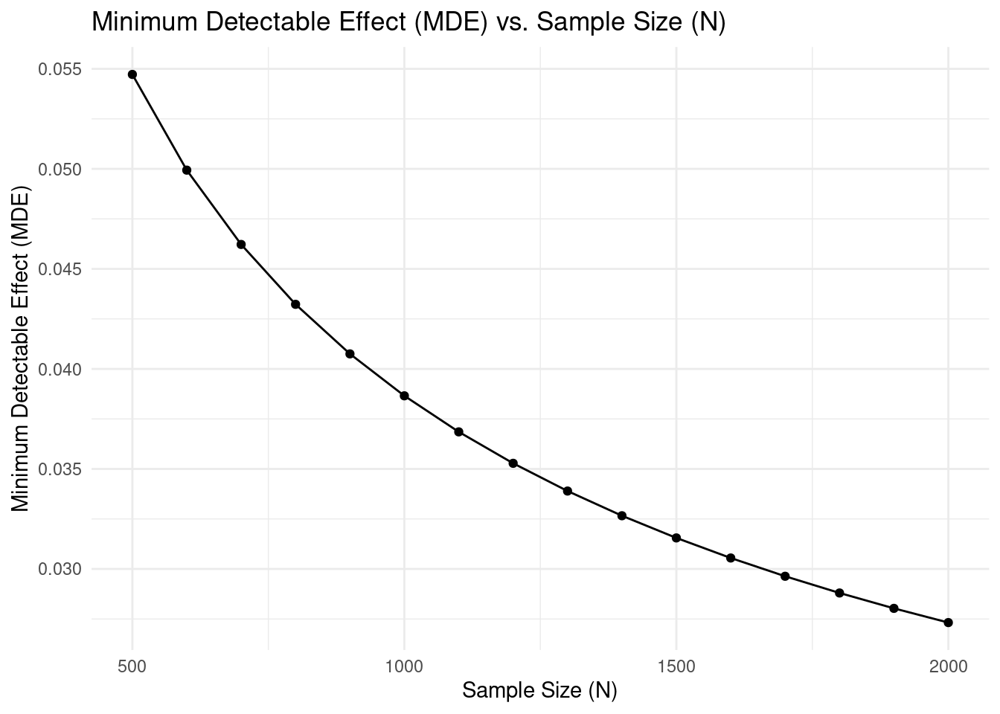
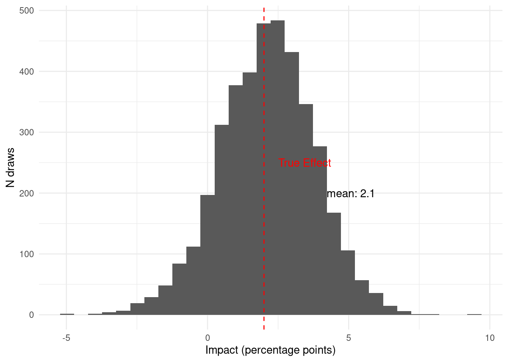
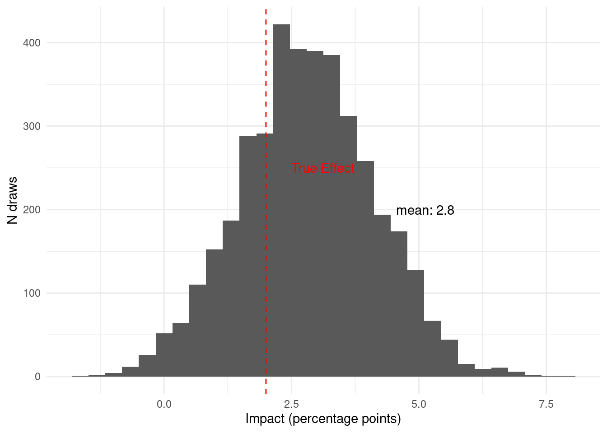

As we discussed before, the most important thing when designing a study is to start with the decision you are trying to inform, and craft the right business questions that can be answered with data to inform that decision. Then, if you are going to run an experiment to answer those questions you will have to think about important details such as how big of an experiment should I run, what should be the unit of randomization, what proportion should be assigned to each arm, etc. To answer these questions most people use power calculations.
13.1 Power Calculations in Experimental Design
In the context of experimental design, power is the probability of detecting an effect if it truly exists. In other words, it’s the likelihood of rejecting the null hypothesis when it is false. Power is intrinsically linked to Type II error (false negative), which is the probability of failing to reject the null hypothesis when it is actually false. Power is calculated as \(1 - \beta\), where \(\beta\) represents the probability of a Type II error.
Power analysis involves determining the minimum sample size needed to detect an effect of a given size or determining the effect size that can be detected with a given sample size. A key concept in power analysis is the Minimum Detectable Effect (MDE), which is the smallest effect size that the study is designed to detect with a specified level of statistical power. Power can be conceptualized as a function of the signal-to-noise ratio in an experiment. The “signal” refers to the effect size, while the “noise” represents the variability within the data. A stronger signal and lower noise lead to higher power.
Traditional power analysis focuses on Type I and Type II errors. However, Gelman and Carlin (2014) argue that these are insufficient to fully capture the risks of null hypothesis significance testing (NHST). They propose considering Type S (sign) and Type M (magnitude) errors:
Type S error: The probability that a statistically significant result has the opposite sign of the true effect. This can lead to incorrect conclusions about the direction of an effect.
Type M error: The factor by which a statistically significant effect might be overestimated. This can lead to exaggerated claims about the size of an effect.
These errors are particularly relevant in studies with small samples and noisy data, where statistically significant results may be misleading. Gelman and Carlin recommend design analysis, which involves calculating Type S and Type M errors to assess the potential for these errors in a study design.
Methods for Performing Power Calculations
There are different methods for performing power calculations:
Analytical methods: These methods use formulas to calculate power or sample size based on the factors mentioned above. For example, the formula for calculating the sample size needed for a two-sample t-test can be found in many statistical textbooks .
Simulation methods: These methods involve generating random data and performing statistical tests repeatedly to estimate power. They are particularly useful for complex study designs where analytical formulas may not be available or accurate.
A Simple Example with the Analytical Method
Suppose we are thinking about running an experiment and our outcome of interest is binary and only 5% of the outcomes take the value 1. For example, this could be an experiment for reducing churn. Imagine we are testing a new intervention aimed at reducing customer churn, and we want to understand how large of an experiment we need to reliably detect a reduction in the churn rate if the intervention is effective. Our baseline churn rate is 5%, meaning that without any intervention, approximately 5% of customers churn.
We want to use an analytical method to perform a power calculation. Specifically, we want to investigate how the Minimum Detectable Effect (MDE) changes as we increase the sample size of our experiment. The MDE, in this context, represents the smallest reduction in the churn rate that our experiment is designed to detect with a given level of statistical power.
The R code below uses the calculateMdes function to compute the MDE for different sample sizes (N), assuming we are conducting a two-sample t-test to compare the churn rates between a treatment and a control group. We set the significance level (sig_lvl) to 0.05 and the desired power (power) to 0.80. This means we want to design our experiment such that if there is a true effect (reduction in churn), we have an 80% chance of detecting it as statistically significant at the 5% significance level. The proportion assigned to treatment (and control) p is set to 0.5, assuming equal allocation. The outcome is specified as “binary”, and mean_y is set to 0.05, representing our baseline churn rate.
The code then iterates through a range of sample sizes, from 500 to 2000, and calculates the MDE for each sample size. Finally, it generates a plot showing the relationship between the sample size (N) and the MDE.
library(ggplot2)library(purrr)calculateMdes <-function(sig_lvl =0.05,power =0.80, N,g =1,p =0.5,outcome =c("binary", "continuous"),mean_y =NULL,sigma_y =NULL,R_sq_xy =0,rho =0,R_sq_WG =0,R_sq_BG =0) {# Input Validation (Moved up for earlier checks) outcome <-match.arg(outcome) # Ensure a valid outcome is selectedif (outcome =="continuous"&is.null(sigma_y)) {stop("When outcome is continuous, you must specify sigma_y") }if (outcome =="binary"&is.null(mean_y)) {stop("When outcome is binary, you must specify mean_y") }# Calculate Degrees of Freedom df <-ifelse(g ==1, N -2, g -2)# Calculate Factor for t-distribution factor <-qt(p =1- sig_lvl /2, df = df) +qt(p = power, df = df)# Calculate sigma_lambdaRA_hatif (g ==1) { sigma_lambdaRA_hat <-sqrt((1- R_sq_xy) / (N * p * (1- p))) } else { cluster_size <- N / g A <-1/ (p * (1- p)) B <- ((1- rho) * (1- R_sq_WG)) / (g * cluster_size) C <- (rho * (1- R_sq_BG)) / g sigma_lambdaRA_hat <-sqrt(A * (B + C)) }# Calculate sigma_y for binary outcomeif (outcome =="binary") { sigma_y <-sqrt(mean_y * (1- mean_y)) }# Calculate MDE and MDES MDE <- factor * sigma_lambdaRA_hat * sigma_y MDES <- MDE / sigma_yreturn(c(MDES = MDES, MDE = MDE)) }# Vector of N values to explore (adjust as needed)n_values <-seq(500, 2000, by =100)# Create a data frame with MDE values for different Nmde_data <-map_df(n_values, ~calculateMdes(N = .x,sig_lvl =0.05,power =0.80,p =0.5,outcome ="binary",mean_y =0.05)) |> dplyr::mutate(N = n_values)# Create the plotggplot(mde_data, aes(x = N, y = MDE)) +geom_line() +geom_point() +labs(title ="Minimum Detectable Effect (MDE) vs. Sample Size (N)",x ="Sample Size (N)",y ="Minimum Detectable Effect (MDE)" ) +theme_minimal()

For instance, let’s consider a point on the plot. If with a sample size of 1000, the MDE is approximately 0.04. This means that with a total sample size of 1000 (500 in the treatment group and 500 in the control group), we would be able to detect a reduction in the churn rate of 4 percentage points. If the true reduction in churn rate due to our intervention is smaller, our experiment might not be powerful enough to detect it as statistically significant, and we might fail to reject the null hypothesis of no effect (even if a real, albeit smaller, effect exists).
Interpreting MDEs
The MDE curve helps you determine the tradeoff between sample size and detectable effect size. Larger sample sizes allow you to detect smaller effects, but at diminishing returns. When planning your study, consider both the smallest effect size that would be practically meaningful for your business decision and the resources required for different sample sizes.
Simulations for Type S and M Errors
To illustrate Type S (Sign) and M (Magnitude) errors in a practical context, let’s consider a simulation based on a common A/B testing scenario. Imagine a company has a baseline customer churn rate of 5% and aims to detect an impact of 2 percentage points through some intervention.
The simulation below assesses how frequently a study with a moderate sample size (n=500 per group) might incorrectly estimate the direction or exaggerate the magnitude of the observed effect:
Now lets run some simulations to estimate type S and M errors. The code bellow runs 10,000 simulations with 500 obervations in the treatment and 500 in the control group, 5% probability of churn for the control group, and and impact of 2 percentage points for treated units.
Out of the 10,000 simulations, only 2636 yielded a statistically significant result. Among these statistically significant results, 0.23% incorrectly estimated the direction of the effect (Type S error). The average exaggeration of the effect size (Type M error) among the significant results was 1.93x.
13.2 Profit-Maximizing A/B Testing: A Test & Roll Approach
Traditional power calculations in A/B testing focus on managing statistical significance by controlling Type I and Type II errors. However, in practical business experiments, the primary goal isn’t merely to “reject the null hypothesis” but to maximize overall profit. The test & roll framework, introduced by McDonnell Feit and Berman (2018), re-frames sample size determination as a strategic decision balancing the cost of learning against the opportunity cost of deploying a suboptimal treatment.
Balancing Learning and Opportunity Cost
In conventional A/B tests, achieving high statistical power often requires large test groups, inadvertently exposing more customers to potentially inferior treatments. The test & roll framework explicitly addresses two crucial considerations:
The cost of testing: Every unit allocated to the test phase may experience a less-than-optimal treatment.
The benefit of deployment: Once the better treatment is identified, it can be applied to the remainder of the population to maximize profit.
By quantifying these trade-offs explicitly, the optimal (profit-maximizing) test size is typically smaller than traditional hypothesis testing methods recommend, particularly when data responses are noisy or population size is limited.
A Closed-Form Insight
McDonnell Feit and Berman (2018) derived a closed-form formula for determining optimal test sizes under symmetric Normal priors (assuming no initial preference between treatments). Formally, the optimal sample size grows as follows:
This contrasts with traditional power calculations, which typically recommend sample sizes scaling linearly or super-linearly with variance, often resulting in overly large tests.
Extensions to Asymmetric and Complex Settings
The basic test & roll framework can also be extended to account for situations where prior beliefs about the treatments differ. For instance:
Incumbent/Challenger Tests: If one treatment is well understood (the incumbent) and the other is more uncertain (the challenger), asymmetric priors can be used to justify allocating a larger sample to the less-known treatment.
Pricing Experiments: When treatments involve different price points, the trade-offs include not only response variability but also differences in profit per sale. The framework naturally extends to these settings by adjusting priors to reflect both the likelihood of purchase and the profit margin.
Operational Advantages
In practice, the test & roll design helps managers make timely decisions:
Smaller, Agile Tests: By running smaller tests, firms expose fewer customers to a potentially inferior treatment.
Transparency: The decision rule is based on explicit profit calculations, making it easier to justify the chosen test size and strategy.
Comparable Performance: Despite its simplicity, the test & roll approach has been shown to achieve regret—and thus overall performance—that is comparable to more complex, continuously adaptive methods like Thompson sampling.
Summary
By centering experimentation on maximizing business impact rather than solely achieving statistical significance, the test & roll framework presents a robust, economically efficient alternative to traditional power-based approaches. It optimally manages the trade-offs between learning and earning, particularly advantageous for noisy data or limited customer populations.
13.3 Pilot Strength: A Decision-Centric Approach
Instead of focusing solely on traditional power calculations, let’s explore a slightly different concept: pilot strength. Pilot strength represents the probability of making the correct decision based on a pilot study with specific characteristics and assumptions. For instance, we can examine how sample size influences the strength of a pilot. This decision-centric approach proves particularly valuable when the traditional frequentist framework might fail to reject the null hypothesis, yet a decision must still be made with the available data. To calculate pilot strength, we’ll employ simulations.
Generating Synthetic Data
Let’s start by generating synthetic data. Similar to the previous example, we’ll consider a binary outcome like customer churn and an intervention that could potentially impact it. In our synthetic data, we’ll assume the new feature increases churn by 2 percentage points. Our goal is to decide whether to roll out this new feature, with the understanding that we should avoid the rollout if the impact on churn exceeds 1 percentage point.
We’ll generate data based on the following assumptions:
Equal Treatment Allocation: A 50% probability of assignment to the treatment group.
Churn Probabilities: A churn probability of 5% for the control group and 7% for the treatment group.
Time Periods: Data collection across three time periods, with 20% of observations in period 1, 50% in period 2, and 30% in period 3.
library(dplyr)library(rstan)library(ggpubr)library(scales)library(furrr)# Create a function to generate synthetic datagenerate_synthetic_data <-function(seed, num_observations, treatment_proportion, control_churn_prob, treatment_churn_prob, period1_proportion, period2_proportion) {set.seed(seed)# Calculate number of observations in each group and period directly num_treatment <-round(num_observations * treatment_proportion) num_control <- num_observations - num_treatment num_period1 <-round(num_observations * period1_proportion) num_period2 <-round(num_observations * period2_proportion) num_period3 <- num_observations - num_period1 - num_period2# Create data frame using explicit group and period assignments synthetic_data <-tibble(id =1:num_observations,treat =c(rep(1, num_treatment), rep(0, num_control)),period =c(rep(1, num_period1), rep(2, num_period2), rep(3, num_period3)) ) %>%group_by(treat) %>%mutate(# Generate binary outcome based on group-specific probabilitiesy =case_when( treat ==0~rbinom(n(), 1, control_churn_prob),TRUE~rbinom(n(), 1, treatment_churn_prob) )) %>%ungroup() # Important: Always ungroup after group_byreturn(synthetic_data) }# Generate synthetic datasynthetic_data <-generate_synthetic_data(seed =123,num_observations =2000,treatment_proportion =0.5,control_churn_prob =0.05,treatment_churn_prob =0.07,period1_proportion =0.2,period2_proportion =0.5)glimpse(synthetic_data)
The glimpse() output provides a summary of the synthetic_data dataframe. It confirms that we have 2000 observations with the variables id, treat (treatment indicator), period, and y (binary outcome representing churn). The true impact of the new feature is a 2 percentage point increase in churn probability. Our objective is to estimate the probability that this impact exceeds 1 percentage point, which would lead us to decide against rolling out the feature.
A Simple Stan Model to Fit the Data
We’ll implement a simple Bayesian logistic regression model to analyze these synthetic data. This approach allows us to directly estimate the probability that the treatment effect exceeds our decision threshold.
data {int N; // Number of observationsint<lower = 0, upper = 1> y[N]; // Outcome (binary 0 or 1)vector[N] treat; // Treatment indicatorreal mean_alpha;real sd_alpha;real tau_mean; // Prior mean for treatment effectreal<lower=0> tau_sd; // Prior standard deviation for treatment effect// Flag for running estimation (0: no, 1: yes)int<lower=0, upper=1> run_estimation;}parameters {real alpha; // Intercept parameterreal tau; // treatment effect parameter}model {vector[N] theta; // Linear predictor (stores calculated probabilities)// Priors alpha ~ normal(mean_alpha, sd_alpha); tau ~ normal(tau_mean, tau_sd); theta = alpha + tau * treat; // Calculate linear predictorif (run_estimation==1) {// Likelihood with logit link function: y ~ bernoulli_logit(theta); }}generated quantities {vector[N] y_sim;vector[N] y0;vector[N] y1;real eta;real mean_y_sim;for (i in1:N) { y_sim[i] = bernoulli_logit_rng(alpha + tau * treat[i]); y0[i] = bernoulli_logit_rng(alpha); y1[i] = bernoulli_logit_rng(alpha + tau); } eta = mean(y1) - mean(y0); mean_y_sim = mean(y_sim);}
This model allows us to calculate the probability that the intervention elevates the likelihood of churn by more than our minimum threshold. Let’s create a function to analyze our synthetic data:
In Bayesian modeling, it’s crucial to check if our prior distributions are reasonable. We use prior predictive checks to simulate data from our prior distributions and visually assess if these simulated datasets are plausible in the context of our problem. If the prior predictive distributions generate implausible data, it might indicate that our priors are misspecified.
The plots above show that our prior distributions for the outcome (churn) and the impact of the intervention are reasonable. In particular our prior before seeing the outcome data is that the probability that the intervention has a meaningful impact is 55%.
Sequential Bayesian Updating with Incoming Data
Let’s see how our model updates its beliefs as new data becomes available across different time periods.
Given the data available in period 1, we believe that the probability that the intervention has a meaningful impact is 99.7%. This is with just 400 observations. Now we can see what happens as we see more data in period 2.

Now, given the data available in period 2, we believe that the probability that the intervention has a meaningful impact is 75.3%. Notice that new 1000 observations from period 2 move the posterior quite a bit. Finally, let’s see how the data from period 3 updates the posterior.

Once we have collected all the data from this pilot, Given the data available in period 3, we believe that the probability that the intervention has a meaningful impact is 91.8%.
One important thing to notice is that at any moment, including before collecting any data, we could have made a decision. Then, as we collected more data our belief changed.
Calculating the Strength of a Pilot
To calculate the strength of a pilot, we can run a simulation like the one above many times and see how often we would make the right decision. Moreover, we can do this under different assumptions.
For all our simulations, we will use the following decision rule: if the posterior probability that the impact exceeds 1 percentage point is greater than 75%, we kill the new feature; otherwise, we launch it. For the first set of simulations, we will assume that the true impact is an increase in churn of 2 percentage points; therefore, killing the new feature is the right choice. We will also run these simulations assuming our pilot will have 2000 observations, half in treatment and half in control.
run_simulations <-function(N, num_observations, treatment_proportion, control_churn_prob, treatment_churn_prob, period1_proportion, period2_proportion, mean_alpha, sd_alpha, tau_mean, tau_sd, periods, threshold,num_cores =1) {# Function to run a single simulation run_single_sim <-function(i) {# Generate synthetic data with a unique seed synthetic_data <-generate_synthetic_data(seed = i,# Use simulation number as seednum_observations = num_observations,treatment_proportion = treatment_proportion,control_churn_prob = control_churn_prob,treatment_churn_prob = treatment_churn_prob,period1_proportion = period1_proportion,period2_proportion = period2_proportion )# Analyze the synthetic data analysis_result <-analyze_synthetic_data(data = synthetic_data,mean_alpha = mean_alpha,sd_alpha = sd_alpha,tau_mean = tau_mean,tau_sd = tau_sd,run_estimation =1,# Run estimationperiods = periods,threshold = threshold )return(analysis_result$prob_above_threshold) }# Run simulations using purrr (parallel or sequential) probabilities <-1:N %>% {if (num_cores >1) {# Use future_map for parallel execution future::plan(future::multicore, workers = num_cores) # Setup parallel processingfuture_map(., run_single_sim) } else {# Use map for sequential executionmap(., run_single_sim) } }return(probabilities) }
The simulation results tell us that, with our chosen priors, model, pilot size, and decision rule, we correctly kill the new feature (when it truly has a meaningful impact) in approximately 74% of the simulated pilot studies.
Next we can run this simulation under the assumption that instead of 2000 observations we will only have 1000 observations.
Now we can see that if the pilot only has 1000 observations, we would make the right decision only 68% of the time.
Similarly, we can now change our data generating process so that the true effect of the intervention is zero. In the right decision would be to roll out the new feature.
In this case, the probability of making the right choice (rolling out the new feature when it has no meaningful impact on churn) is 84%.
Learn more
Dong and Maynard (2013) PowerUp!: A tool for calculating minimum detectable effect sizes and minimum required sample sizes for experimental and quasi-experimental design studies.
Bloom (2008) The core analytics of randomized experiments for social research.
Gelman and Carlin (2014) Beyond power calculations: Assessing type S (sign) and type M (magnitude) errors.
McDonnell Feit and Berman (2018) Test & Roll: Profit-Maximizing A/B Tests.
Bloom, Howard S. 2008. “The Core Analytics of Randomized Experiments for Social Research.”The SAGE Handbook of Social Research Methods, 115–33. https://files.eric.ed.gov/fulltext/ED493363.pdf.
Dong, Nianbo, and Rebecca Maynard. 2013. “PowerUp!: A Tool for Calculating Minimum Detectable Effect Sizes and Minimum Required Sample Sizes for Experimental and Quasi-Experimental Design Studies.”Journal of Research on Educational Effectiveness 6 (1): 24–67. https://www.ipr.northwestern.edu/documents/required-reading/2018/dong--maynard-2013.pdf.
---title: "Study Design"share: permalink: "https://book.martinez.fyi/strenght.html" description: "Pilot Strength: Designing Decision-Centric Business Experiments" linkedin: true email: true mastodon: true---As we discussed before, the most important thing when designing a study is tostart with the decision you are trying to inform, and craft the right businessquestions that can be answered with data to inform that decision. Then, if youare going to run an experiment to answer those questions you will have to thinkabout important details such as how big of an experiment should I run, whatshould be the unit of randomization, what proportion should be assigned to eacharm, etc. To answer these questions most people use power calculations.## Power Calculations in Experimental DesignIn the context of experimental design, power is the probability of detecting aneffect if it truly exists. In other words, it's the likelihood of rejecting thenull hypothesis when it is false. Power is intrinsically linked to Type II error(false negative), which is the probability of failing to reject the nullhypothesis when it is actually false. Power is calculated as $1 - \beta$, where$\beta$ represents the probability of a Type II error.Power analysis involves determining the minimum sample size needed to detect aneffect of a given size or determining the effect size that can be detected witha given sample size. A key concept in power analysis is the Minimum DetectableEffect (MDE), which is the smallest effect size that the study is designed todetect with a specified level of statistical power. Power can be conceptualizedas a function of the signal-to-noise ratio in an experiment. The "signal" refersto the effect size, while the "noise" represents the variability within thedata. A stronger signal and lower noise lead to higher power.Traditional power analysis focuses on Type I and Type II errors. However, Gelmanand Carlin (2014) argue that these are insufficient to fully capture the risksof null hypothesis significance testing (NHST). They propose considering Type S(sign) and Type M (magnitude) errors: - **Type S error:** The probability that a statistically significant result has the opposite sign of the true effect. This can lead to incorrect conclusions about the direction of an effect. - **Type M error:** The factor by which a statistically significant effect might be overestimated. This can lead to exaggerated claims about the size of an effect.These errors are particularly relevant in studies with small samples and noisydata, where statistically significant results may be misleading. Gelman andCarlin recommend design analysis, which involves calculating Type S and Type Merrors to assess the potential for these errors in a study design.### Methods for Performing Power CalculationsThere are different methods for performing power calculations: - **Analytical methods:** These methods use formulas to calculate power or sample size based on the factors mentioned above. For example, the formula for calculating the sample size needed for a two-sample t-test can be found in many statistical textbooks . - **Simulation methods:** These methods involve generating random data and performing statistical tests repeatedly to estimate power. They are particularly useful for complex study designs where analytical formulas may not be available or accurate.### A Simple Example with the Analytical MethodSuppose we are thinking about running an experiment and our outcome of interestis binary and only 5% of the outcomes take the value 1. For example, this couldbe an experiment for reducing churn. Imagine we are testing a new interventionaimed at reducing customer churn, and we want to understand how large of anexperiment we need to reliably detect a reduction in the churn rate if theintervention is effective. Our baseline churn rate is 5%, meaning that withoutany intervention, approximately 5% of customers churn.We want to use an analytical method to perform a power calculation.Specifically, we want to investigate how the Minimum Detectable Effect (MDE)changes as we increase the sample size of our experiment. The MDE, in thiscontext, represents the smallest reduction in the churn rate that our experimentis designed to detect with a given level of statistical power.The R code below uses the `calculateMdes` function to compute the MDE fordifferent sample sizes (N), assuming we are conducting a two-sample t-test tocompare the churn rates between a treatment and a control group. We set thesignificance level (`sig_lvl`) to 0.05 and the desired power (`power`) to 0.80.This means we want to design our experiment such that if there is a true effect(reduction in churn), we have an 80% chance of detecting it as statisticallysignificant at the 5% significance level. The proportion assigned to treatment(and control) p is set to 0.5, assuming equal allocation. The outcome isspecified as "binary", and `mean_y` is set to 0.05, representing our baselinechurn rate.The code then iterates through a range of sample sizes, from 500 to 2000, andcalculates the MDE for each sample size. Finally, it generates a plot showingthe relationship between the sample size (N) and the MDE.```{r}library(ggplot2)library(purrr)calculateMdes <-function(sig_lvl =0.05,power =0.80, N,g =1,p =0.5,outcome =c("binary", "continuous"),mean_y =NULL,sigma_y =NULL,R_sq_xy =0,rho =0,R_sq_WG =0,R_sq_BG =0) {# Input Validation (Moved up for earlier checks) outcome <-match.arg(outcome) # Ensure a valid outcome is selectedif (outcome =="continuous"&is.null(sigma_y)) {stop("When outcome is continuous, you must specify sigma_y") }if (outcome =="binary"&is.null(mean_y)) {stop("When outcome is binary, you must specify mean_y") }# Calculate Degrees of Freedom df <-ifelse(g ==1, N -2, g -2)# Calculate Factor for t-distribution factor <-qt(p =1- sig_lvl /2, df = df) +qt(p = power, df = df)# Calculate sigma_lambdaRA_hatif (g ==1) { sigma_lambdaRA_hat <-sqrt((1- R_sq_xy) / (N * p * (1- p))) } else { cluster_size <- N / g A <-1/ (p * (1- p)) B <- ((1- rho) * (1- R_sq_WG)) / (g * cluster_size) C <- (rho * (1- R_sq_BG)) / g sigma_lambdaRA_hat <-sqrt(A * (B + C)) }# Calculate sigma_y for binary outcomeif (outcome =="binary") { sigma_y <-sqrt(mean_y * (1- mean_y)) }# Calculate MDE and MDES MDE <- factor * sigma_lambdaRA_hat * sigma_y MDES <- MDE / sigma_yreturn(c(MDES = MDES, MDE = MDE)) }# Vector of N values to explore (adjust as needed)n_values <-seq(500, 2000, by =100)# Create a data frame with MDE values for different Nmde_data <-map_df(n_values, ~calculateMdes(N = .x,sig_lvl =0.05,power =0.80,p =0.5,outcome ="binary",mean_y =0.05)) |> dplyr::mutate(N = n_values)# Create the plotggplot(mde_data, aes(x = N, y = MDE)) +geom_line() +geom_point() +labs(title ="Minimum Detectable Effect (MDE) vs. Sample Size (N)",x ="Sample Size (N)",y ="Minimum Detectable Effect (MDE)" ) +theme_minimal()```For instance, let's consider a point on the plot. If with a sample size of 1000,the MDE is approximately`r round(calculateMdes(N = 1000, sig_lvl = 0.05, power = 0.80, p = 0.5, outcome = "binary", mean_y = 0.05)[[2]], 2)`.This means that with a total sample size of 1000 (500 in the treatment groupand 500 in the control group), we would be able to detect a reduction in thechurn rate of`r round(calculateMdes(N = 1000, sig_lvl = 0.05, power = 0.80, p = 0.5, outcome = "binary", mean_y = 0.05)[[2]], 2)*100`percentage points. If the true reduction in churn rate due to our interventionis smaller, our experiment might not be powerful enough to detect it asstatistically significant, and we might fail to reject the null hypothesis of noeffect (even if a real, albeit smaller, effect exists).::: callout-note## Interpreting MDEsThe MDE curve helps you determine the tradeoff between sample size anddetectable effect size. Larger sample sizes allow you to detect smaller effects,but at diminishing returns. When planning your study, consider both the smallesteffect size that would be practically meaningful for your business decision andthe resources required for different sample sizes.:::### Simulations for Type S and M ErrorsTo illustrate Type S (Sign) and M (Magnitude) errors in a practical context,let's consider a simulation based on a common A/B testing scenario. Imagine acompany has a baseline customer churn rate of 5% and aims to detect an impactof 2 percentage points through some intervention.The simulation below assesses how frequently a study with a moderate sample size(n=500 per group) might incorrectly estimate the direction or exaggerate themagnitude of the observed effect:Now lets run some simulations to estimate type S and M errors. The code bellowruns 10,000 simulations with 500 obervations in the treatment and 500 in thecontrol group, 5% probability of churn for the control group, and and impactof 2 percentage points for treated units.```{r}#| warning: false#| message: falselibrary(tidyverse)library(broom)estimateTypeSM <-function(p_true_control, lift, n_per_group, alpha, n_sim) { p_true_variant <- p_true_control + lift simulations <-tibble(control_successes =rbinom(n_sim, n_per_group, p_true_control),variant_successes =rbinom(n_sim, n_per_group, p_true_variant) ) prop_tests <-map2_df(simulations$control_successes, simulations$variant_successes, ~tidy(prop.test(c(.x, .y), n =c(n_per_group, n_per_group),correct =FALSE))) %>%mutate(diff = estimate2 - estimate1) significant_results <- prop_tests %>%filter(p.value < alpha) significant_count <-nrow(significant_results)if(significant_count >0) { type_s_rate <-mean(significant_results$diff * lift <0) *100 exaggeration <-mean(abs(significant_results$diff) /abs(lift)) } else { type_s_rate <-0 exaggeration <-NA }list(significant_count = significant_count,type_s_rate = type_s_rate,exaggeration = exaggeration )}results <-estimateTypeSM(p_true_control =0.05, lift =0.02, n_per_group =500, alpha =0.05, n_sim =10000)```Out of the 10,000 simulations, only `r results$significant_count` yielded astatistically significant result. Among these statistically significant results,`r round(results$type_s_rate, 2)`% incorrectly estimated the direction of theeffect (Type S error). The average exaggeration of the effect size (Type Merror) among the significant results was `r round(results$exaggeration, 2)`x.## Profit-Maximizing A/B Testing: A Test & Roll ApproachTraditional power calculations in A/B testing focus on managing statisticalsignificance by controlling Type I and Type II errors. However, in practicalbusiness experiments, the primary goal isn't merely to "reject the nullhypothesis" but to maximize overall profit. The test & roll framework,introduced by @mcdonnell2018test, re-frames sample size determination as astrategic decision balancing the cost of learning against the opportunity costof deploying a suboptimal treatment.### Balancing Learning and Opportunity CostIn conventional A/B tests, achieving high statistical power often requires largetest groups, inadvertently exposing more customers to potentially inferiortreatments. The test & roll framework explicitly addresses two crucialconsiderations: - **The cost of testing:** Every unit allocated to the test phase may experience a less-than-optimal treatment. - **The benefit of deployment:** Once the better treatment is identified, it can be applied to the remainder of the population to maximize profit.By quantifying these trade-offs explicitly, the optimal (profit-maximizing) testsize is typically smaller than traditional hypothesis testing methods recommend,particularly when data responses are noisy or population size is limited.### A Closed-Form Insight@mcdonnell2018test derived a closed-form formula for determining optimal testsizes under symmetric Normal priors (assuming no initial preference betweentreatments). Formally, the optimal sample size grows as follows:$$ n^* \propto \sqrt{N} \quad \text{and} \quad n^* \sim \mathcal{O}\left(\frac{s}{\sigma}\right) $$This implies: - Optimal test size ($n^*$) scales with the square root of the total available population ($N$). - The optimal test size is sensitive to the response noise ($s$) and the uncertainty in treatment effects ($\sigma$).More specifically, proposition A.2 in their paper derives:$$n^{*}=n_{1}^{*}=n_{2}^{*}=\sqrt{\frac{N}{4}\left(\frac{s}{\sigma}\right)^{2}+\left(\frac{3}{4}\left(\frac{s}{\sigma}\right)^{2}\right)^{2}}-\frac{3}{4}\left(\frac{s}{\sigma}\right)^{2}$$This contrasts with traditional power calculations, which typically recommendsample sizes scaling linearly or super-linearly with variance, often resultingin overly large tests.### Extensions to Asymmetric and Complex SettingsThe basic test & roll framework can also be extended to account for situationswhere prior beliefs about the treatments differ. For instance: - **Incumbent/Challenger Tests:** If one treatment is well understood (the incumbent) and the other is more uncertain (the challenger), asymmetric priors can be used to justify allocating a larger sample to the less-known treatment. - **Pricing Experiments:** When treatments involve different price points, the trade-offs include not only response variability but also differences in profit per sale. The framework naturally extends to these settings by adjusting priors to reflect both the likelihood of purchase and the profit margin.### Operational AdvantagesIn practice, the test & roll design helps managers make timely decisions: - **Smaller, Agile Tests:** By running smaller tests, firms expose fewer customers to a potentially inferior treatment. - **Transparency:** The decision rule is based on explicit profit calculations, making it easier to justify the chosen test size and strategy. - **Comparable Performance:** Despite its simplicity, the test & roll approach has been shown to achieve regret—and thus overall performance—that is comparable to more complex, continuously adaptive methods like Thompson sampling.### SummaryBy centering experimentation on maximizing business impact rather than solelyachieving statistical significance, the test & roll framework presents a robust,economically efficient alternative to traditional power-based approaches. Itoptimally manages the trade-offs between learning and earning, particularlyadvantageous for noisy data or limited customer populations.## Pilot Strength: A Decision-Centric ApproachInstead of focusing solely on traditional power calculations, let's explore aslightly different concept: pilot strength. Pilot strength represents theprobability of making the correct decision based on a pilot study with specificcharacteristics and assumptions. For instance, we can examine how sample sizeinfluences the strength of a pilot. This decision-centric approach provesparticularly valuable when the traditional frequentist framework might fail toreject the null hypothesis, yet a decision must still be made with the availabledata. To calculate pilot strength, we'll employ simulations.### Generating Synthetic DataLet's start by generating synthetic data. Similar to the previous example, we'llconsider a binary outcome like customer churn and an intervention that couldpotentially impact it. In our synthetic data, we'll assume the new featureincreases churn by 2 percentage points. Our goal is to decide whether to rollout this new feature, with the understanding that we should avoid the rollout ifthe impact on churn exceeds 1 percentage point.We'll generate data based on the following assumptions:1. **Equal Treatment Allocation:** A 50% probability of assignment to the treatment group.2. **Churn Probabilities:** A churn probability of 5% for the control group and 7% for the treatment group.3. **Time Periods:** Data collection across three time periods, with 20% of observations in period 1, 50% in period 2, and 30% in period 3.```{r}#| warning: false#| message: falselibrary(dplyr)library(rstan)library(ggpubr)library(scales)library(furrr)# Create a function to generate synthetic datagenerate_synthetic_data <-function(seed, num_observations, treatment_proportion, control_churn_prob, treatment_churn_prob, period1_proportion, period2_proportion) {set.seed(seed)# Calculate number of observations in each group and period directly num_treatment <-round(num_observations * treatment_proportion) num_control <- num_observations - num_treatment num_period1 <-round(num_observations * period1_proportion) num_period2 <-round(num_observations * period2_proportion) num_period3 <- num_observations - num_period1 - num_period2# Create data frame using explicit group and period assignments synthetic_data <-tibble(id =1:num_observations,treat =c(rep(1, num_treatment), rep(0, num_control)),period =c(rep(1, num_period1), rep(2, num_period2), rep(3, num_period3)) ) %>%group_by(treat) %>%mutate(# Generate binary outcome based on group-specific probabilitiesy =case_when( treat ==0~rbinom(n(), 1, control_churn_prob),TRUE~rbinom(n(), 1, treatment_churn_prob) )) %>%ungroup() # Important: Always ungroup after group_byreturn(synthetic_data) }# Generate synthetic datasynthetic_data <-generate_synthetic_data(seed =123,num_observations =2000,treatment_proportion =0.5,control_churn_prob =0.05,treatment_churn_prob =0.07,period1_proportion =0.2,period2_proportion =0.5)glimpse(synthetic_data)```The `glimpse()` output provides a summary of the synthetic\_data dataframe. Itconfirms that we have 2000 observations with the variables `id`, `treat`(treatment indicator), `period`, and `y` (binary outcome representing churn).The true impact of the new feature is a 2 percentage point increase in churnprobability. Our objective is to estimate the probability that this impactexceeds 1 percentage point, which would lead us to decide against rolling outthe feature.### A Simple Stan Model to Fit the DataWe'll implement a simple Bayesian logistic regression model to analyze thesesynthetic data. This approach allows us to directly estimate the probabilitythat the treatment effect exceeds our decision threshold.```{stan output.var = "logit"}data { int N; // Number of observations int<lower = 0, upper = 1> y[N]; // Outcome (binary 0 or 1) vector[N] treat; // Treatment indicator real mean_alpha; real sd_alpha; real tau_mean; // Prior mean for treatment effect real<lower=0> tau_sd; // Prior standard deviation for treatment effect // Flag for running estimation (0: no, 1: yes) int<lower=0, upper=1> run_estimation;}parameters { real alpha; // Intercept parameter real tau; // treatment effect parameter}model { vector[N] theta; // Linear predictor (stores calculated probabilities) // Priors alpha ~ normal(mean_alpha, sd_alpha); tau ~ normal(tau_mean, tau_sd); theta = alpha + tau * treat; // Calculate linear predictor if (run_estimation==1) { // Likelihood with logit link function: y ~ bernoulli_logit(theta); }}generated quantities { vector[N] y_sim; vector[N] y0; vector[N] y1; real eta; real mean_y_sim; for (i in 1:N) { y_sim[i] = bernoulli_logit_rng(alpha + tau * treat[i]); y0[i] = bernoulli_logit_rng(alpha); y1[i] = bernoulli_logit_rng(alpha + tau); } eta = mean(y1) - mean(y0); mean_y_sim = mean(y_sim);}```This model allows us to calculate the probability that the intervention elevatesthe likelihood of churn by more than our minimum threshold. Let's create afunction to analyze our synthetic data:```{r}analyze_synthetic_data <-function(data, mean_alpha, sd_alpha, tau_mean, tau_sd, run_estimation, periods, threshold) {# Filter dataif (!is.null(periods)) { data <- data %>%filter(period %in% periods) }# Prepare data for Stan stan_data <-list(N =nrow(data),y = data$y,treat = data$treat,mean_alpha = mean_alpha,sd_alpha = sd_alpha,tau_mean = tau_mean,tau_sd = tau_sd,run_estimation = run_estimation )# Fit Stan model posterior <-sampling(logit, # Use the loaded stan modeldata = stan_data,refresh =0)if (run_estimation ==0) {# Prior predictive check prior_draws <- posterior::as_draws_df(posterior) prior_eta <- prior_draws$eta prior_tau <- prior_draws$tau prior_mean_y <- prior_draws$mean_y_sim# --- Create plots (using your provided structure) --- mean_y_plot <- ggplot2::ggplot(data = tibble::tibble(draws = prior_mean_y), ggplot2::aes(x = draws) ) + ggplot2::geom_histogram(bins =30) + ggplot2::scale_x_continuous(labels = scales::percent) + ggplot2::annotate("text",x =quantile(prior_mean_y, prob =0.9),y =200, label =paste0("mean: ",round(mean(prior_mean_y) *100, 1) ),hjust =0 ) + ggplot2::xlab(expression(bar(y))) +# Using expression for y bar ggplot2::ylab("N draws") + ggplot2::theme_minimal() tau_plot <- ggplot2::ggplot(data = tibble::tibble(draws = prior_tau), ggplot2::aes(x = draws) ) + ggplot2::geom_histogram(bins =30) + ggplot2::xlab(expression(tau)) +# Using expression for tau ggplot2::ylab("N draws") + ggplot2::theme_minimal() eta_plot <- ggplot2::ggplot(data = tibble::tibble(draws = prior_eta *100), ggplot2::aes(x = draws) ) + ggplot2::geom_histogram(bins =30) + ggplot2::annotate("text",x =quantile(prior_eta *100, prob =0.9),y =200, label =paste0("mean: ",round(mean(prior_eta) *100, 1) ),hjust =0 ) + ggplot2::geom_vline(xintercept =2,color ="red",linetype ="dashed") + ggplot2::annotate("text",x =2.5,y =250,label ="True Effect",color ="red",hjust =0 ) + ggplot2::xlab("Impact in percentage points") + ggplot2::ylab("N draws") + ggplot2::theme_minimal()# --- Combine plots with ggarrange --- plots <- ggpubr::ggarrange(eta_plot, ggpubr::ggarrange(tau_plot, mean_y_plot,labels =c("tau", "Outcome"),ncol =2),labels ="Impact", nrow =2 ) plots <-annotate_figure(plots,top =text_grob("Draws from prior distributions",face ="bold",size =14 ))# Calculate probability above threshold prob_above_threshold <-mean(prior_eta > threshold)# Return the combined plot and probabilityreturn(list(plot = plots, prob_above_threshold = prob_above_threshold)) } else {# --- Posterior analysis (remains the same) --- posterior_draws <- posterior::as_draws_df(posterior) posterior_eta <- posterior_draws$eta eta_plot <-ggplot(data =tibble(draws = posterior_eta *100), aes(x = draws)) +geom_histogram(bins =30) +annotate("text",x =quantile(posterior_eta *100, prob =0.9),y =200,label =paste0("mean: ", round(mean(posterior_eta) *100, 1)),hjust =0 ) +geom_vline(xintercept =2,color ="red",linetype ="dashed") +annotate("text",x =2.5,y =250,label ="True Effect",color ="red",hjust =0 ) +labs(x ="Impact (percentage points)", y ="N draws") +theme_minimal() prob_above_threshold <-mean(posterior_eta > threshold)return(list(plot = eta_plot, prob_above_threshold = prob_above_threshold)) } }```### Prior Predictive ChecksIn Bayesian modeling, it's crucial to check if our prior distributions arereasonable. We use prior predictive checks to simulate data from our priordistributions and visually assess if these simulated datasets are plausible inthe context of our problem. If the prior predictive distributions generateimplausible data, it might indicate that our priors are misspecified.```{r}#| warning: false#| message: falseprior <-analyze_synthetic_data(data = synthetic_data,mean_alpha =-6,sd_alpha =1,tau_mean =2,tau_sd =2,run_estimation =0,periods =c(1, 2, 3),threshold =0.01)# Print the plotprior$plot```The plots above show that our prior distributions for the outcome (churn) andthe impact of the intervention are reasonable. In particular our prior beforeseeing the outcome data is that the probability that the intervention has ameaningful impact is `r scales::percent(prior$prob_above_threshold)`.### Sequential Bayesian Updating with Incoming DataLet's see how our model updates its beliefs as new data becomes available acrossdifferent time periods.```{r}#| warning: false#| message: falseperiod_1 <-analyze_synthetic_data(data = synthetic_data,mean_alpha =-6,sd_alpha =1,tau_mean =2,tau_sd =2,run_estimation =1,periods =c(1),threshold =0.01)# Print the plotperiod_1$plot```Given the data available in period 1, we believe that the probability that theintervention has a meaningful impact is`r scales::percent(period_1$prob_above_threshold, accuracy = 0.1)`. This is withjust `r synthetic_data %>% filter(period == 1) %>% nrow()` observations. Now wecan see what happens as we see more data in period 2.```{r}#| echo: false#| warning: false#| message: falseperiod_1_2 <-analyze_synthetic_data(data = synthetic_data,mean_alpha =-6,sd_alpha =1,tau_mean =2,tau_sd =2,run_estimation =1,periods =c(1,2),threshold =0.01)# Print the plotperiod_1_2$plot```Now, given the data available in period 2, we believe that the probability thatthe intervention has a meaningful impact is`r scales::percent(period_1_2$prob_above_threshold, accuracy = 0.1)`. Noticethat new `r synthetic_data %>% filter(period == 2) %>% nrow()` observations fromperiod 2 move the posterior quite a bit. Finally, let's see how the data fromperiod 3 updates the posterior.```{r}#| echo: false#| warning: false#| message: falseperiod_1_2_3 <-analyze_synthetic_data(data = synthetic_data,mean_alpha =-6,sd_alpha =1,tau_mean =2,tau_sd =2,run_estimation =1,periods =c(1,2,3),threshold =0.01)# Print the plotperiod_1_2_3$plot```Once we have collected all the data from this pilot, Given the data available inperiod 3, we believe that the probability that the intervention has a meaningfulimpact is`r scales::percent(period_1_2_3$prob_above_threshold, accuracy = 0.1)`.One important thing to notice is that at any moment, including before collectingany data, we could have made a decision. Then, as we collected more data ourbelief changed.### Calculating the Strength of a PilotTo calculate the strength of a pilot, we can run a simulation like the one abovemany times and see how often we would make the right decision. Moreover, we cando this under different assumptions.For all our simulations, we will use the following decision rule: if theposterior probability that the impact exceeds 1 percentage point is greaterthan 75%, we kill the new feature; otherwise, we launch it. For the first set ofsimulations, we will assume that the true impact is an increase in churn of 2percentage points; therefore, killing the new feature is the right choice. Wewill also run these simulations assuming our pilot will have 2000 observations,half in treatment and half in control.```{r}run_simulations <-function(N, num_observations, treatment_proportion, control_churn_prob, treatment_churn_prob, period1_proportion, period2_proportion, mean_alpha, sd_alpha, tau_mean, tau_sd, periods, threshold,num_cores =1) {# Function to run a single simulation run_single_sim <-function(i) {# Generate synthetic data with a unique seed synthetic_data <-generate_synthetic_data(seed = i,# Use simulation number as seednum_observations = num_observations,treatment_proportion = treatment_proportion,control_churn_prob = control_churn_prob,treatment_churn_prob = treatment_churn_prob,period1_proportion = period1_proportion,period2_proportion = period2_proportion )# Analyze the synthetic data analysis_result <-analyze_synthetic_data(data = synthetic_data,mean_alpha = mean_alpha,sd_alpha = sd_alpha,tau_mean = tau_mean,tau_sd = tau_sd,run_estimation =1,# Run estimationperiods = periods,threshold = threshold )return(analysis_result$prob_above_threshold) }# Run simulations using purrr (parallel or sequential) probabilities <-1:N %>% {if (num_cores >1) {# Use future_map for parallel execution future::plan(future::multicore, workers = num_cores) # Setup parallel processingfuture_map(., run_single_sim) } else {# Use map for sequential executionmap(., run_single_sim) } }return(probabilities) }```Let's run the simulations with 2000 observations:```{r}#| warning: false#| message: falsesimulations <-run_simulations(N =200,num_observations =2000,treatment_proportion =0.5,control_churn_prob =0.05,treatment_churn_prob =0.07,period1_proportion =0.2,period2_proportion =0.5,mean_alpha =-6,sd_alpha =1,tau_mean =2,tau_sd =2,periods =c(1, 2, 3),threshold =0.01,num_cores =4)```The simulation results tell us that, with our chosen priors, model, pilot size,and decision rule, we correctly kill the new feature (when it truly has ameaningful impact) in approximately`r scales::percent(mean(simulations > 0.75))` of the simulated pilot studies.Next we can run this simulation under the assumption that instead of 2000observations we will only have 1000 observations.```{r}#| warning: false#| message: falsesimulations <-run_simulations(N =200,num_observations =1000,treatment_proportion =0.5,control_churn_prob =0.05,treatment_churn_prob =0.07,period1_proportion =0.2,period2_proportion =0.5,mean_alpha =-6,sd_alpha =1,tau_mean =2,tau_sd =2,periods =c(1, 2, 3),threshold =0.01,num_cores =4)```Now we can see that if the pilot only has 1000 observations, we would make theright decision only `r scales::percent(mean(simulations > 0.75))` of the time.Similarly, we can now change our data generating process so that the true effectof the intervention is zero. In the right decision would be to roll out the newfeature.```{r}#| warning: false#| message: falsesimulations <-run_simulations(N =200,num_observations =1000,treatment_proportion =0.5,control_churn_prob =0.05,treatment_churn_prob =0.05, # <-same as control_churn_probperiod1_proportion =0.2,period2_proportion =0.5,mean_alpha =-6,sd_alpha =1,tau_mean =2,tau_sd =2,periods =c(1, 2, 3),threshold =0.01,num_cores =4)```In this case, the probability of making the right choice (rolling out the new feature when it has no meaningful impact on churn) is `r scales::percent(mean(simulations < 0.75))`.::: callout-tip## Learn more- @dong2013powerup PowerUp!: A tool for calculating minimum detectable effect sizes and minimum required sample sizes for experimental and quasi-experimental design studies.- @bloom2008core The core analytics of randomized experiments for social research.- @gelman2014beyond Beyond power calculations: Assessing type S (sign) and type M (magnitude) errors.- @mcdonnell2018test Test & Roll: Profit-Maximizing A/B Tests.\:::